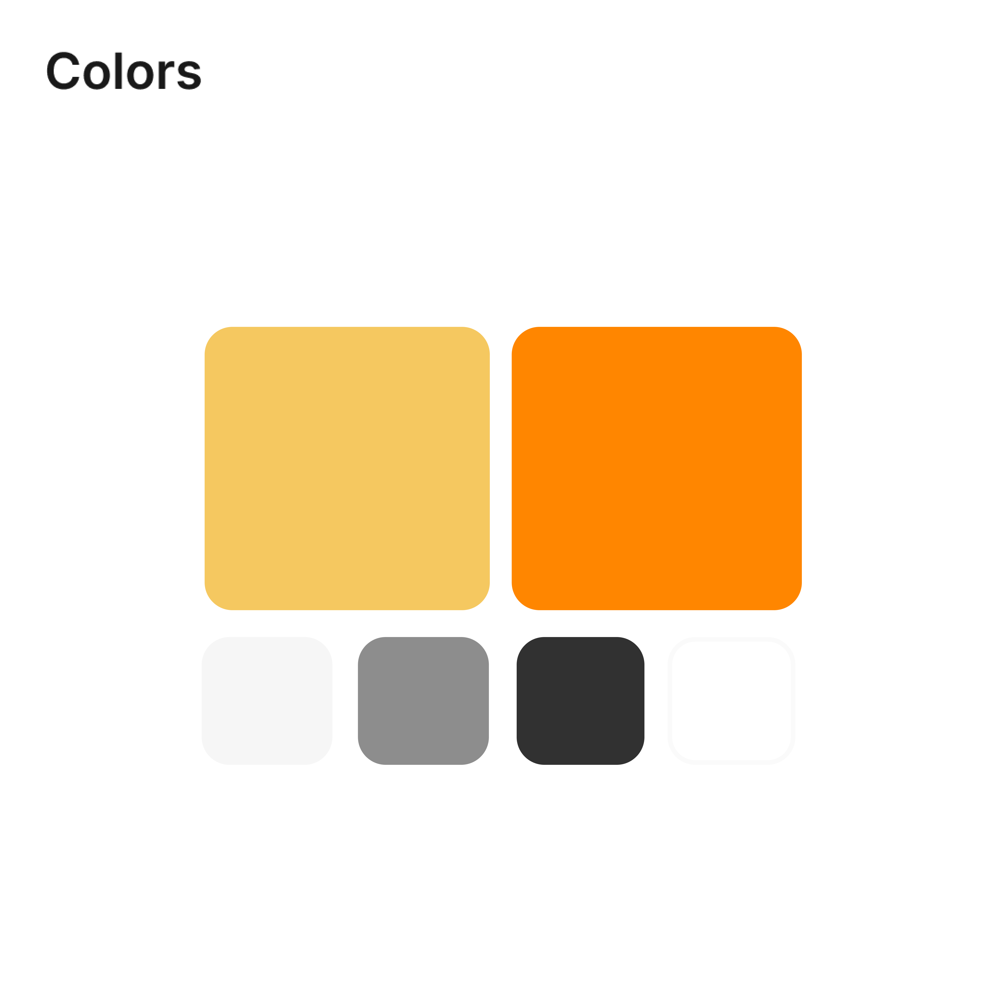
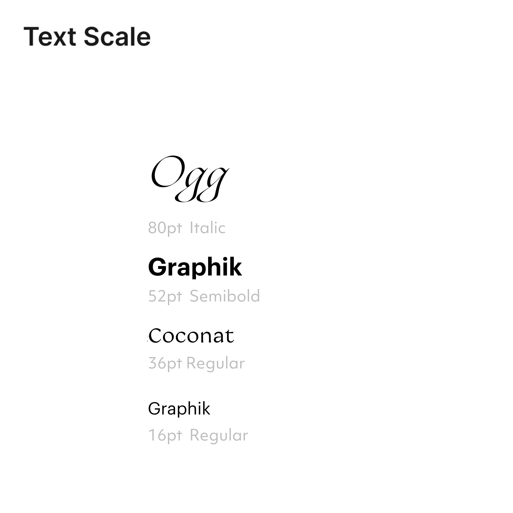
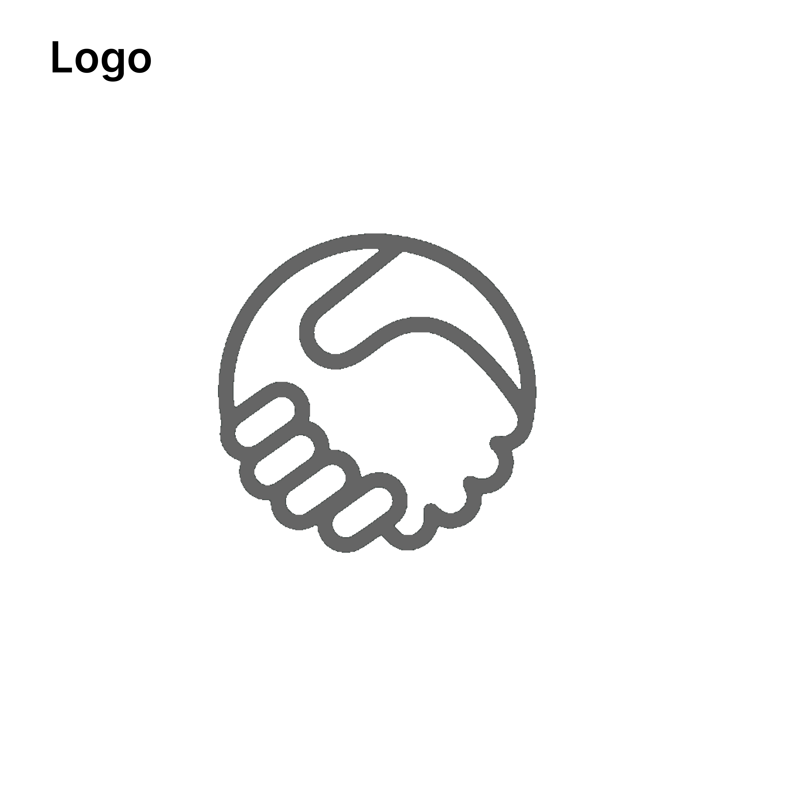

Design System
I next began exploring the visual design of our new brand’s website. While the major elements of our new brand were defined (color, typograpghy, and logo) there was still ample room to define how they worked together in an interactive environment. Throughout this exploratory phase, I documented our nascent design system in Figma and worked to ensure that elements were consistent across the entire page.


